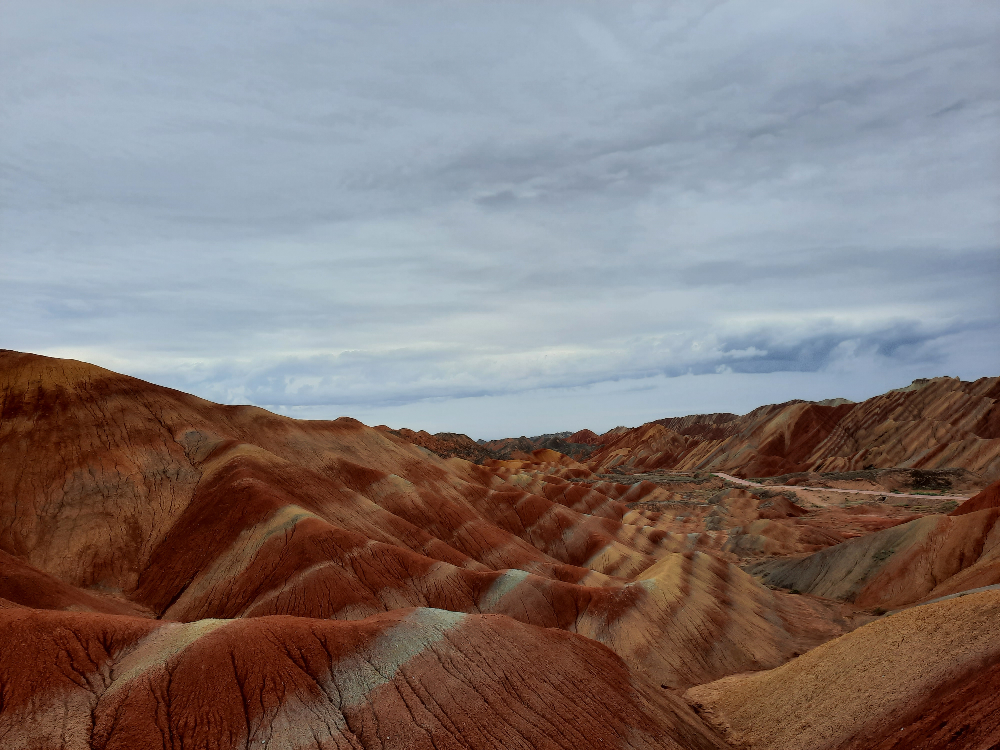
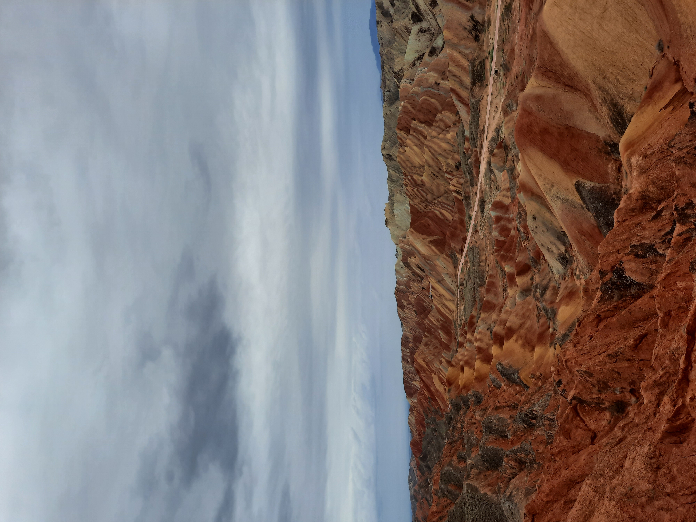
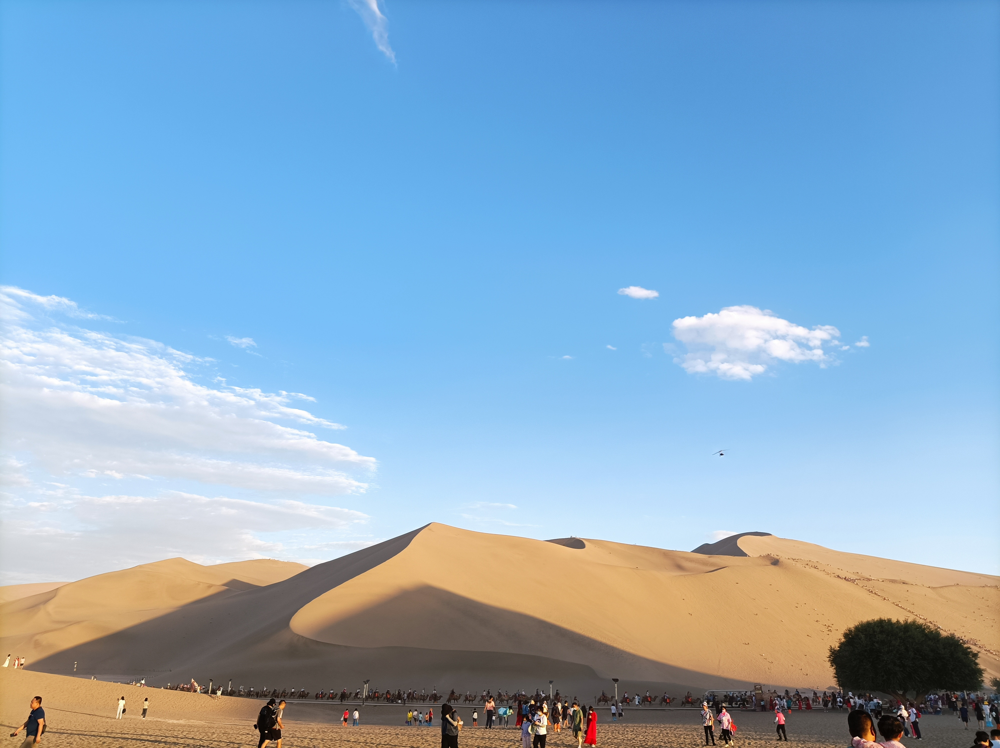
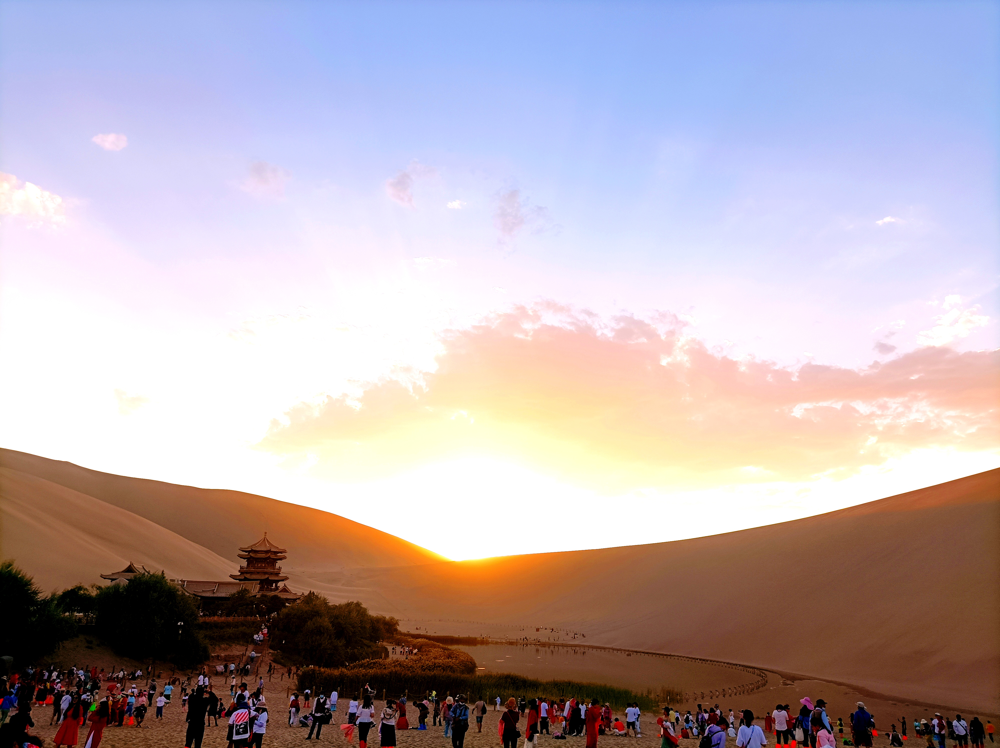
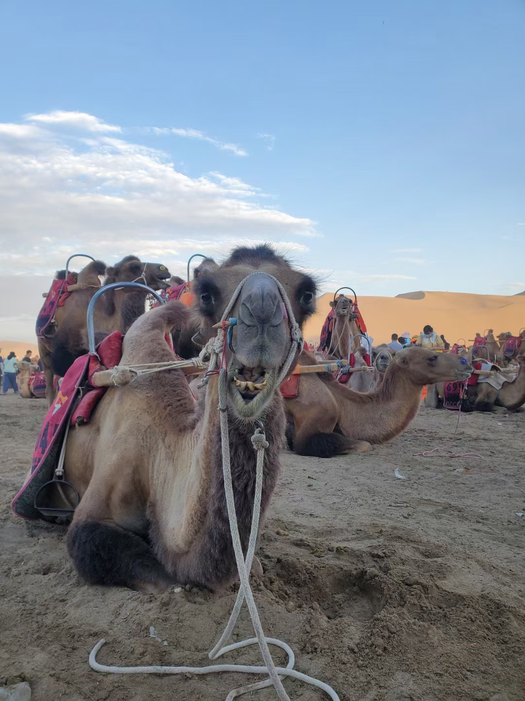
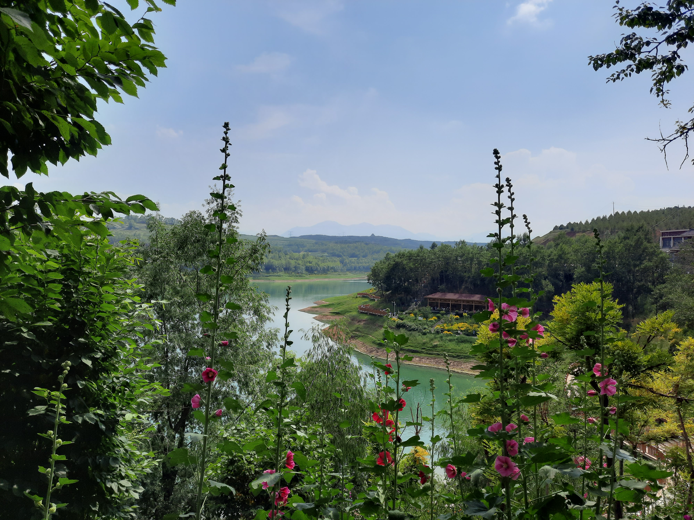
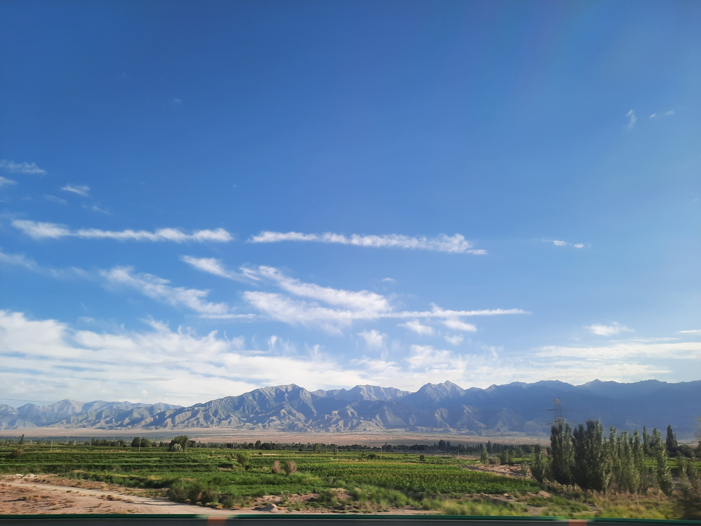

A place full of magnificent views and minority culture. Different terrain. Impressive shock with the wise accient culture. night becomes dark at 9 pm. Jiayu Pass A majestic scene that I saw. It’s a stronghold in the ancient day when people went on “Silk Way”. Therefor we can saw a big wall which protected the people staying inside and some entertainment stages and so on. Moreover, the view outside the castle is quite impressive! Danxia Zhangye National Geological Park Incredible views that I saw! It’s the first time I realize that world has this kind of terrain. And the wind there is really big that everything on us gonna fly away.   Mogao Grottoes It’s hard to think that many years ago the ancient people have the technic to build those magnificent sculpture. When I saw those drawing and sculpture, I just realized that there are too many thing outside the world looking forward to being found out by us! Dunhuang Desert The place I want to go to the most at that trip in Gansu. Desert, a boundless place where people get in would feel helpless. And that’s the truth of the natural strength. The only little disappointment is that there were to many tourists out there, and the camels were meagre cause they walk too much and some of them even yelling loudly to the people. I felt pitiful to them.    Lanzhou city and views Though Gansu is a very inner-land province, the city there is still prosperity. Moreover, they also have MRT there!!! And the views we pass by when went to the other places were really pretty!  